Earth/Sun ephemerides can be generated using the routine sla_EVP, which predicts Earth position and velocity with respect to both the solar-system barycentre and the Sun. Maximum velocity error is 0.42 metres per second; maximum heliocentric position error is 1600 km (about 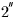), with barycentric position errors about 4 times worse. (The Sun's position as seen from the Earth can, of course, be obtained simply by reversing the signs of the Cartesian components of the Earth:Sun vector.)
Geocentric Moon ephemerides are available from sla_DMOON, which predicts the Moon's position and velocity with respect to the Earth's centre. Direction accuracy is usually better than 10 km (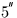) and distance accuracy a little worse.
Lower-precision but faster predictions for the Sun and Moon can be made by calling sla_EARTH and sla_MOON. Both are single precision and accept dates in the form of year, day-in-year and fraction of day (starting from a calendar date you need to call sla_CLYD or sla_CALYD to get the required year and day). The sla_EARTH routine returns the heliocentric position and velocity of the Earth's centre for the mean equator and equinox of date. The accuracy is better than 20,000 km in position and 10 metres per second in speed. The position and velocity of the Moon with respect to the Earth's centre for the mean equator and ecliptic of date can be obtained by calling sla_MOON. The positional accuracy is better than 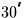 in direction and 1000 km in distance.
Approximate ephemerides for all the major planets
can be generated by calling
sla_PLANET
or
sla_RDPLAN. These routines offer arcminute accuracy (much
better for the inner planets and for Pluto) over a span of several
millennia (but only 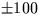 years for Pluto).
The routine
sla_PLANET produces heliocentric position and
velocity in the form of equatorial  for the
mean equator and equinox of J2000. The vectors
produced by
sla_PLANET
can be used in a variety of ways according to the
requirements of the application concerned. The routine
sla_RDPLAN
uses
sla_PLANET
and
sla_DMOON
to deal with the common case of predicting
a planet's apparent
for the
mean equator and equinox of J2000. The vectors
produced by
sla_PLANET
can be used in a variety of ways according to the
requirements of the application concerned. The routine
sla_RDPLAN
uses
sla_PLANET
and
sla_DMOON
to deal with the common case of predicting
a planet's apparent  and angular size as seen by a
terrestrial observer.
and angular size as seen by a
terrestrial observer.
Note that in predicting the position in the sky of a solar-system body
it is necessary to allow for geocentric parallax. This correction
is essential in the case of the Moon, where the observer's
position on the Earth can affect the Moon's  by up to
. The calculation can most conveniently be done by calling
sla_PVOBS and subtracting the resulting 6-vector from the
one produced by
sla_DMOON, as is demonstrated by the following example:
by up to
. The calculation can most conveniently be done by calling
sla_PVOBS and subtracting the resulting 6-vector from the
one produced by
sla_DMOON, as is demonstrated by the following example:
* Demonstrate the size of the geocentric parallax correction
* in the case of the Moon. The test example is for the AAT,
* before midnight, in summer, near first quarter.
IMPLICIT NONE
CHARACTER NAME*40,SH,SD
INTEGER J,I,IHMSF(4),IDMSF(4)
DOUBLE PRECISION SLONGW,SLAT,H,DJUTC,FDUTC,DJUT1,DJTT,STL,
: RMATN(3,3),PMM(6),PMT(6),RM,DM,PVO(6),TL
DOUBLE PRECISION sla_DTT,sla_GMST,sla_EQEQX,sla_DRANRM
* Get AAT longitude and latitude in radians and height in metres
CALL sla_OBS(0,'AAT',NAME,SLONGW,SLAT,H)
* UTC (1992 January 13, 11 13 59) to MJD
CALL sla_CLDJ(1992,1,13,DJUTC,J)
CALL sla_DTF2D(11,13,59.0D0,FDUTC,J)
DJUTC=DJUTC+FDUTC
* UT1 (UT1-UTC value of -0.152 sec is from IERS Bulletin B)
DJUT1=DJUTC+(-0.152D0)/86400D0
* TT
DJTT=DJUTC+sla_DTT(DJUTC)/86400D0
* Local apparent sidereal time
STL=sla_GMST(DJUT1)-SLONGW+sla_EQEQX(DJTT)
* Geocentric position/velocity of Moon (mean of date)
CALL sla_DMOON(DJTT,PMM)
* Nutation to true equinox of date
CALL sla_NUT(DJTT,RMATN)
CALL sla_DMXV(RMATN,PMM,PMT)
CALL sla_DMXV(RMATN,PMM(4),PMT(4))
* Report geocentric HA,Dec
CALL sla_DCC2S(PMT,RM,DM)
CALL sla_DR2TF(2,sla_DRANRM(STL-RM),SH,IHMSF)
CALL sla_DR2AF(1,DM,SD,IDMSF)
WRITE (*,'(1X,'' geocentric:'',2X,A,I2.2,2I3.2,''.'',I2.2,'//
: '1X,A,I2.2,2I3.2,''.'',I1)')
: SH,IHMSF,SD,IDMSF
* Geocentric position of observer (true equator and equinox of date)
CALL sla_PVOBS(SLAT,H,STL,PVO)
* Place origin at observer
DO I=1,6
PMT(I)=PMT(I)-PVO(I)
END DO
* Allow for planetary aberration
TL=499.004782D0*SQRT(PMT(1)**2+PMT(2)**2+PMT(3)**2)
DO I=1,3
PMT(I)=PMT(I)-TL*PMT(I+3)
END DO
* Report topocentric HA,Dec
CALL sla_DCC2S(PMT,RM,DM)
CALL sla_DR2TF(2,sla_DRANRM(STL-RM),SH,IHMSF)
CALL sla_DR2AF(1,DM,SD,IDMSF)
WRITE (*,'(1X,''topocentric:'',2X,A,I2.2,2I3.2,''.'',I2.2,'//
: '1X,A,I2.2,2I3.2,''.'',I1)')
: SH,IHMSF,SD,IDMSF
END
The output produced is as follows:
geocentric: +03 06 55.59 +15 03 39.0
topocentric: +03 09 23.79 +15 40 51.5
(An easier but less instructive method of estimating the topocentric apparent place of the Moon is to call the routine sla_RDPLAN.)
As an example of using sla_PLANET, the following program estimates the geocentric separation between Venus and Jupiter during a close conjunction in 2BC, which is a star-of-Bethlehem candidate:
* Compute time and minimum geocentric apparent separation
* between Venus and Jupiter during the close conjunction of 2 BC.
IMPLICIT NONE
DOUBLE PRECISION SEPMIN,DJD0,FD,DJD,DJDM,DF,PV(6),RMATP(3,3),
: PVM(6),PVE(6),TL,RV,DV,RJ,DJ,SEP
INTEGER IHOUR,IMIN,J,I,IHMIN,IMMIN
DOUBLE PRECISION sla_EPJ,sla_DSEP
* Search for closest approach on the given day
DJD0=1720859.5D0
SEPMIN=1D10
DO IHOUR=20,22
DO IMIN=0,59
CALL sla_DTF2D(IHOUR,IMIN,0D0,FD,J)
* Julian date and MJD
DJD=DJD0+FD
DJDM=DJD-2400000.5D0
* Earth to Moon (mean of date)
CALL sla_DMOON(DJDM,PV)
* Precess Moon position to J2000
CALL sla_PRECL(sla_EPJ(DJDM),2000D0,RMATP)
CALL sla_DMXV(RMATP,PV,PVM)
* Sun to Earth-Moon Barycentre (mean J2000)
CALL sla_PLANET(DJDM,3,PVE,J)
* Correct from EMB to Earth
DO I=1,3
PV(I)=PVE(I)-0.012150581D0*PVM(I)
END DO
* Sun to Venus
CALL sla_PLANET(DJDM,2,PV,J)
* Earth to Venus
DO I=1,6
PV(I)=PV(I)-PVE(I)
END DO
* Light time to Venus (sec)
TL=499.004782D0*SQRT((PV(1)-PVE(1))**2+
: (PV(2)-PVE(2))**2+
: (PV(3)-PVE(3))**2)
* Extrapolate backwards in time by that much
DO I=1,3
PV(I)=PV(I)-TL*PV(I+3)
END DO
* To RA,Dec
CALL sla_DCC2S(PV,RV,DV)
* Same for Jupiter
CALL sla_PLANET(DJDM,5,PV,J)
DO I=1,6
PV(I)=PV(I)-PVE(I)
END DO
TL=499.004782D0*SQRT((PV(1)-PVE(1))**2+
: (PV(2)-PVE(2))**2+
: (PV(3)-PVE(3))**2)
DO I=1,3
PV(I)=PV(I)-TL*PV(I+3)
END DO
CALL sla_DCC2S(PV,RJ,DJ)
* Separation (arcsec)
SEP=sla_DSEP(RV,DV,RJ,DJ)
* Keep if smallest so far
IF (SEP.LT.SEPMIN) THEN
IHMIN=IHOUR
IMMIN=IMIN
SEPMIN=SEP
END IF
END DO
END DO
* Report
WRITE (*,'(1X,I2.2,'':'',I2.2,F6.1)') IHMIN,IMMIN,
: 206264.8062D0*SEPMIN
END
The output produced (the Ephemeris Time on the day in question, and the closest approach in arcseconds) is as follows:
21:19 33.7
For comparison, accurate predictions based on the JPL DE102 ephemeris give a separation about 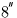 less than the above estimate, occurring about half an hour earlier (see Sky and Telescope, April 1987, p357).
The following program demonstrates sla_RDPLAN.
* For a given date, time and geographical location, output
* a table of planetary positions and diameters.
IMPLICIT NONE
CHARACTER PNAMES(0:9)*7,B*80,S
INTEGER I,NP,IY,J,IM,ID,IHMSF(4),IDMSF(4)
DOUBLE PRECISION R2AS,FD,DJM,ELONG,PHI,RA,DEC,DIAM
PARAMETER (R2AS=206264.80625D0)
DATA PNAMES / 'Sun','Mercury','Venus','Moon','Mars','Jupiter',
: 'Saturn','Uranus','Neptune', 'Pluto' /
* Loop until 'end' typed
B=' '
DO WHILE (B.NE.'END'.AND.B.NE.'end')
* Get date, time and observer's location
PRINT *,'Date? (Y,M,D, Gregorian)'
READ (*,'(A)') B
IF (B.NE.'END'.AND.B.NE.'end') THEN
I=1
CALL sla_INTIN(B,I,IY,J)
CALL sla_INTIN(B,I,IM,J)
CALL sla_INTIN(B,I,ID,J)
PRINT *,'Time? (H,M,S, dynamical)'
READ (*,'(A)') B
I=1
CALL sla_DAFIN(B,I,FD,J)
FD=FD*2.3873241463784300365D0
CALL sla_CLDJ(IY,IM,ID,DJM,J)
DJM=DJM+FD
PRINT *,'Longitude? (D,M,S, east +ve)'
READ (*,'(A)') B
I=1
CALL sla_DAFIN(B,I,ELONG,J)
PRINT *,'Latitude? (D,M,S, (geodetic)'
READ (*,'(A)') B
I=1
CALL sla_DAFIN(B,I,PHI,J)
* Loop planet by planet
DO NP=0,8
* Get RA,Dec and diameter
CALL sla_RDPLAN(DJM,NP,ELONG,PHI,RA,DEC,DIAM)
* One line of report
CALL sla_DR2TF(2,RA,S,IHMSF)
CALL sla_DR2AF(1,DEC,S,IDMSF)
WRITE (*,
: '(1X,A,2X,3I3.2,''.'',I2.2,2X,A,I2.2,2I3.2,''.'',I1,F8.1)')
: PNAMES(NP),IHMSF,S,IDMSF,R2AS*DIAM
* Next planet
END DO
PRINT *,' '
END IF
* Next case
END DO
END
Entering the following data (for 1927 June 29 at 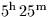 ET
and the position of Preston, UK.):
1927 6 29
5 25
-2 42
53 46
produces the following report:
Sun 06 28 14.03 +23 17 17.5 1887.8
Mercury 08 08 58.62 +19 20 57.3 9.3
Venus 09 38 53.64 +15 35 32.9 22.8
Moon 06 28 18.30 +23 18 37.3 1903.9
Mars 09 06 49.34 +17 52 26.7 4.0
Jupiter 00 11 12.06 -00 10 57.5 41.1
Saturn 16 01 43.34 -18 36 55.9 18.2
Uranus 00 13 33.53 +00 39 36.0 3.5
Neptune 09 49 35.75 +13 38 40.8 2.2
Pluto 07 05 29.50 +21 25 04.2 .1
Inspection of the Sun and Moon data reveals that
a total solar eclipse is in progress.
SLALIB also provides for the case where orbital elements (with respect to the J2000 equinox and ecliptic) are available. This allows predictions to be made for minor-planets and (if you ignore non-gravitational effects) comets. Furthermore, if major-planet elements for an epoch close to the date in question are available, more accurate predictions can be made than are offered by sla_RDPLAN and sla_PLANET.
The SLALIB planetary-prediction
routines that work with orbital elements are
sla_PLANTE (the orbital-elements equivalent of
sla_RDPLAN), which predicts the topocentric  , and
sla_PLANEL (the orbital-elements equivalent of
sla_PLANET), which predicts the heliocentric
, and
sla_PLANEL (the orbital-elements equivalent of
sla_PLANET), which predicts the heliocentric  with respect to the
J2000 equinox and equator. In addition, the routine
sla_PV2EL does the inverse of
sla_PLANEL, transforming
with respect to the
J2000 equinox and equator. In addition, the routine
sla_PV2EL does the inverse of
sla_PLANEL, transforming  into osculating elements.
into osculating elements.
Osculating elements describe the unperturbed 2-body orbit. This is a good approximation to the actual orbit for a few weeks either side of the specified epoch, outside which perturbations due to the other bodies of the Solar System lead to increasing errors. Given a minor planet's osculating elements for a particular date, predictions for a date even just 100 days earlier or later are likely to be in error by several arcseconds. These errors can be reduced if new elements are generated which take account of the perturbations of the major planets, and this is what the routine sla_PERTEL does. Once sla_PERTEL has been called, to provide osculating elements close to the required date, the elements can be passed to sla_PLANEL or sla_PLANTE in the normal way. Predictions of arcsecond accuracy over a span of a decade or more are available using this technique.
Three different combinations of orbital elements are
provided for, matching the usual conventions
for major planets, minor planets and
comets respectively. The choice is made through the
argument JFORM:
| JFORM=1 | JFORM=2 | JFORM=3 |
| t0 | t0 | T |
| i | i | i |
| 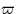 | 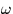 | |
| a | a | q |
| e | e | e |
| L | M | |
| n |
t0 epoch at which the elements were correct T epoch of perihelion passage i inclination of the orbit longitude of the ascending node longitude of perihelion (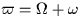) argument of perihelion a semi-major axis of the orbital ellipse q perihelion distance e orbital eccentricity L mean longitude (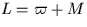) M mean anomaly n mean motion
The mean motion, n, tells sla_PLANEL the mass of the planet. If it is not available, it should be claculated from n2 a3 = k2 (1+m), where k = 0.01720209895 and m is the mass of the planet (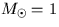); a is in AU.
Conventional elements are not the only way of specifying an orbit.
The  state vector is an equally valid specification,
and the so-called method of universal variables allows
orbital calculations to be made directly, bypassing angular
quantities and avoiding Kepler's Equation. The universal-variables
approach has various advantages, including better handling of
near-parabolic cases and greater efficiency.
SLALIB uses universal variables for its internal
calculations and also offers a number of routines which
applications can call.
state vector is an equally valid specification,
and the so-called method of universal variables allows
orbital calculations to be made directly, bypassing angular
quantities and avoiding Kepler's Equation. The universal-variables
approach has various advantages, including better handling of
near-parabolic cases and greater efficiency.
SLALIB uses universal variables for its internal
calculations and also offers a number of routines which
applications can call.
The universal elements are the  and its epoch, plus the mass
of the body. The SLALIB routines supplement these elements with
certain redundant values in order to
avoid unnecessary recomputation when the elements are next used.
and its epoch, plus the mass
of the body. The SLALIB routines supplement these elements with
certain redundant values in order to
avoid unnecessary recomputation when the elements are next used.
The routines
sla_EL2UE and
sla_UE2EL transform conventional elements into the
universal form and vice versa.
The routine
sla_PV2UE takes an  and forms the set of universal
elements;
sla_UE2PV takes a set of universal elements and predicts the
and forms the set of universal
elements;
sla_UE2PV takes a set of universal elements and predicts the  for a specified epoch.
The routine
sla_PERTUE provides updated universal elements,
taking into account perturbations from the major planets.
for a specified epoch.
The routine
sla_PERTUE provides updated universal elements,
taking into account perturbations from the major planets.
SLALIB --- Positional Astronomy Library